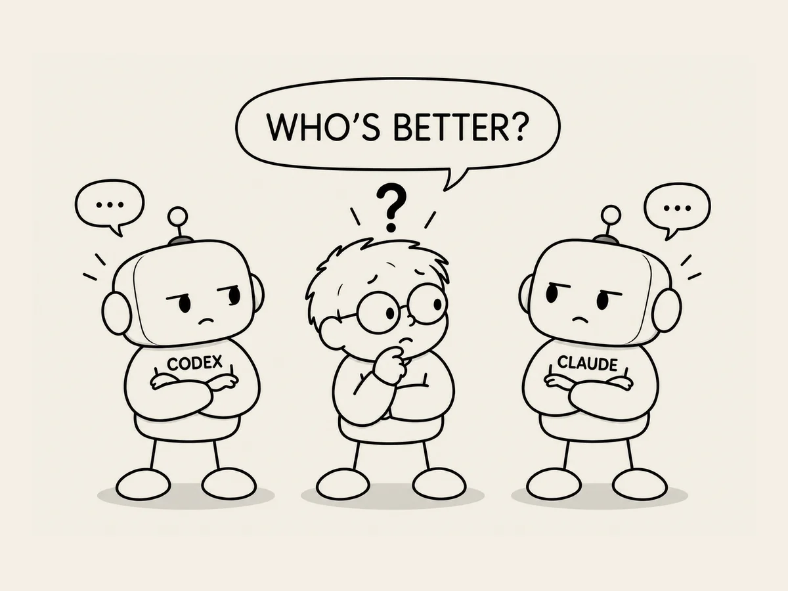

19.
Qué pregunta tan cruel. ¿Quién programa mejor, Codex o Claude?
Es algo que pregunté
hace poco.
«¿Quién programa mejor,
Codex o Claude?»
Pensándolo bien,
es una pregunta
bastante cruel.
Si fueran personas,
sería como preguntar:
«¿Quién es mejor?
¿Tu hermano pequeño
o el hermano pequeño
de tu amigo?»
Es ese tipo de pregunta.
